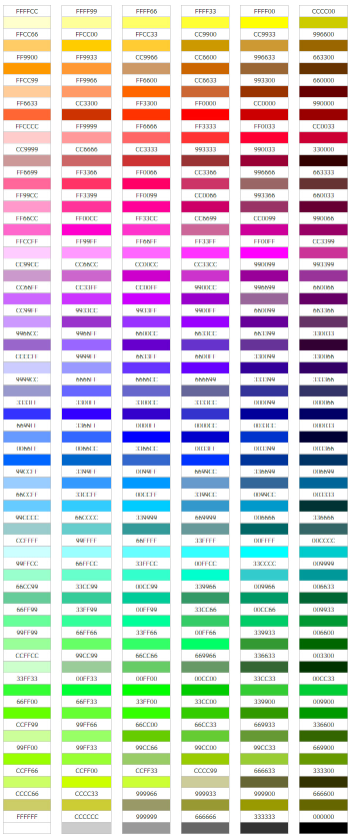

<font> color="#BruceWillis" </font> получаеться такого цвета из за того что - Атрибут color устанавливает цвет текста, используя либо именованный цвет, либо цвет, указанный в шестнадцатеричном формате #RRGGBB.
При работе интерпретатора браузера пропускаемые цифры распознаются как 0[...]. Некорректные символы распознаются как 0. Учитывая это получается что в строке "#BruceWillis" браузер распознает цвет в шестнадцатеричном формате #b0ce00. Во втором случае браузер распознает цвет в шестнадцатеричном формате #ca0d00. В CSS данная особенность работает только в случае указания цвета в шестнадцатеричном формате, если в селекторе установить атрибут color="#BruceWillis" IDE выдаст ошибку, а при запуске страницы цвет текста не изменится.
аналогичная ситуация с <font color="#CANDY"></font>
Безопасная палитра цветов – это общепринятый стандарт для web-дизайнеров. Существует множество платформ и еще большее количество браузеров для этих платформ и все они воспринимают цвета по-разному. Для того, чтобы передать пользователям правильный цвет была составленная таблица цветов, которые ввиду особенности их цветового кода отображаются одинаково правильно на всех платформах и во всех браузерах.
Цвет для браузера, равно как и для компьютера это код, так же как и все остальные данные. Существует две наиболее популярные кодировки записи цвета – HEX-код цвета и RGD кодировка. HEX-код – это представление цвета в виде шестизначного шифра записываемого с помощью шестнадцатеричной кодировки. RGB – RedGreenBlue, то есть представление цвета соотношением содержащихся в нем трех основных цветов, записывается каждый цвет кодом цифровым кодом от 0 до 255, цвета разделяются между собой точкой. Например: абсолютно красный цвет, а значит, в нем нет примесей ни зеленого, ни синего цветов, коды будут выглядеть следующим образом: HEX-код #FF0000, RGB код 255.000.000. А коды абсолютно черного и абсолютно белого будут выглядеть следующим образом HEX #000000 RGB 000.000.000 и HEX #FFFFFF RGB 255.255.255 соответственно.
Всего таких цветов 216. Конечно это немного для web-дизайнера, но единого стандарта всей цветовой палитры так и не создано.
